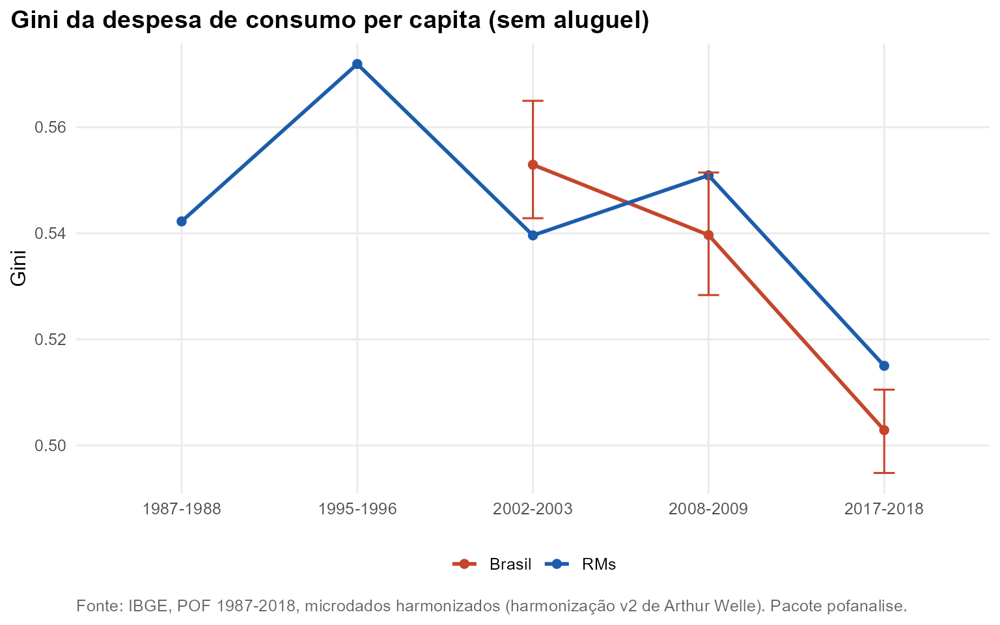

Pergunta. A desigualdade da despesa de consumo diminuiu?
Método. Despesa de consumo per capita sem aluguel,
ponderada por pessoa (pof_desigualdade()): Gini, razão
P90/P10 e parcela do consumo dos 10% de maior consumo. São medidas sem
unidade monetária, comparáveis entre edições. No Brasil, o IC de 95% do
Gini vem de 200 réplicas de bootstrap de UPAs dentro de estrato.
Resultados
Nas RMs, o Gini vai de 0,542 em 1987-1988 a 0,572 em 1995-1996, o ponto mais alto, e cai para 0,515 em 2017-2018. No Brasil, passa de 0,540 (IC: 0,528 a 0,551) para 0,503 (IC: 0,495 a 0,511); os intervalos não se sobrepõem. A parcela dos 10% de maior consumo cai de 41,5% para 38,3%.

| Recorte | Edicao | Gini | IC 95% | P90/P10 | Top 10 (%) |
|---|---|---|---|---|---|
| RMs | 1987-1988 | 0,542 | 12,1 | 41,9 | |
| RMs | 1995-1996 | 0,572 | 14,7 | 44,6 | |
| RMs | 2002-2003 | 0,540 | 13,3 | 41,7 | |
| Brasil | 2002-2003 | 0,553 | 0,543 a 0,565 | 13,6 | 42,9 |
| RMs | 2008-2009 | 0,551 | 12,6 | 43,3 | |
| Brasil | 2008-2009 | 0,540 | 0,528 a 0,551 | 13,0 | 41,5 |
| RMs | 2017-2018 | 0,515 | 11,4 | 39,3 | |
| Brasil | 2017-2018 | 0,503 | 0,495 a 0,511 | 10,7 | 38,3 |
Por região metropolitana
Entre 2008-2009 e 2017-2018 o Gini cai em 9 das 11 RMs. As amostras por RM são menores e esta tabela não tem IC: diferenças pequenas entre RMs não devem ser interpretadas.
| RM | 1987-1988 | 1995-1996 | 2002-2003 | 2008-2009 | 2017-2018 |
|---|---|---|---|---|---|
| Belo Horizonte | 0,518 | 0,544 | 0,519 | 0,548 | 0,459 |
| Belém | 0,532 | 0,511 | 0,468 | 0,472 | 0,491 |
| Brasília | 0,569 | 0,525 | 0,441 | 0,507 | 0,525 |
| Curitiba | 0,517 | 0,535 | 0,502 | 0,539 | 0,454 |
| Fortaleza | 0,567 | 0,576 | 0,548 | 0,486 | 0,462 |
| Goiânia | 0,574 | 0,610 | 0,476 | 0,576 | 0,479 |
| Porto Alegre | 0,511 | 0,538 | 0,511 | 0,480 | 0,465 |
| Recife | 0,557 | 0,586 | 0,510 | 0,575 | 0,501 |
| Rio de Janeiro | 0,529 | 0,581 | 0,562 | 0,562 | 0,525 |
| Salvador | 0,545 | 0,570 | 0,527 | 0,579 | 0,510 |
| São Paulo | 0,533 | 0,561 | 0,530 | 0,538 | 0,524 |